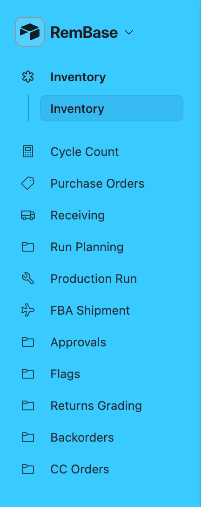
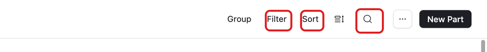
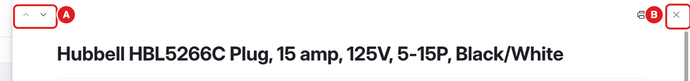

What this chapter is for
Every page in RemBase works the same way. Learn these few things once.
Pick a page
- Click a page name in the menu on the left.
- Some pages have smaller pages under them. Click the smaller page you need.

Find something in a list
Most pages show a list. The buttons at the top right help you find things.

- Click the magnifying glass (Search).
- Type a part number, a name or a PO number.
- The list now shows only matching rows.
- To see everything again, click the ✕ in the search box.
- Filter hides rows you do not need. It changes only your own view.
- Sort changes the order of the rows. It changes only your own view.
Open a record
- Click a row in the list. In some lists, point at the row and click the expand button (two small arrows).
- The record opens on the right side or in the middle.
On the Home pages (Home, Listings, Reports), you can also click a number tile. It opens the list of records behind the number, and each of those opens too. Most record pages are read-only. Where you can write something, the page shows a box for it (for example Your check or Your plan).
Move between records and close

- A – the arrows go to the previous or next record in the list.
- B – the ✕ closes the record.
White boxes and grey text
- A white box with a border is a field you can type in.
- Grey text or text with no box is read-only. The system fills it in.
- RemBase saves what you type by itself. There is no Save button. Click outside the box or press Tab when you finish.
Undo, history and comments
- Made a mistake while typing? Press Cmd+Z (Ctrl+Z on Windows) right away to undo it.
- Stock changes are always recorded in the Ledger: who entered them and when (receipts, counts, builds, reversals, shipments).
- On a PO line, Price/Qty changed by / at shows who last changed the price or quantity.
- For anything else, ask Adam. He can see the full history.
- Comments on a record are visible to everyone.
How to scan
RemBase Scan is a page for your phone. It shows what RemBase knows about an item or a bin. Ask Adam for the RemBase Scan bookmark. You sign in with your work Google account.
- Open the RemBase Scan bookmark.
- Scan a code in one of three ways:
- Pull the trigger on the Bluetooth scanner. You do not need to tap anything first.
- Tap Type. Type the first 2 letters or numbers of the code. A list shows. Tap the right one. It works like a scan. You can also type part of the name. (TEST-BIN’s code is #9001#.)
- Tap Scan with camera.
- Read the result:
- An item shows its bins and how many are in each, its lots and expiration dates, and its open POs. A date in red expires in less than 90 days.
- A bin shows what is in it.
- Use the buttons:
- Open in Inventory opens the part in RemBase.
- Receive: PO … opens that PO line, so you can receive it.
- Count in a bin, or Count this bin, opens a count of that bin.
- Move stock from this bin moves stock to another bin. See Move stock with RemBase Scan.
Count real bins here now. A count on a real bin saves. The page says Counts in this bin save in RemBase and go to Fishbowl automatically (within 5 min). You do not count that bin again in Fishbowl.
Count a bin (phone):
- Scan the bin. Tap Count this bin. (To practice, use TEST-BIN.)
- Scan each item. Each scan adds 1.
- The phone may ask which expiry? Choose the expiration date printed on the item. Not sure? Tap Not sure. That item is not saved. Count it again.
- If a line is right, tap Matches. To type a number, tap the line.
- Tap Finish. You see the differences.
- Tap Save count to RemBase and answer the question.
- Real bin: it says Saved. Sent to Fishbowl automatically (within 5 min). Keep RemBase Scan open (you can count the next bin). A few minutes later you see In Fishbowl ✓.
- TEST-BIN: it says Saved – posting. RemBase posts the stock changes next.
Messages you may see:
| Message | What to do |
|---|---|
| Not saved: stock moved while you counted | Count the bin again. |
| Recount needed – not saved | Count again, and choose the expiration date. |
| Not confirmed – tell Adam. Code … | Give Adam the code. |
| No connection… kept on this phone | Wait. It sends again by itself. |
| Keep this page open: this phone cannot store the count. | Keep the page open until it is saved. |
| Sign in again… | Sign in. The count waits for you. |
After a real count, a red box may show at the top. It names the bin. It stays until you tap OK.
| Red box | What to do |
|---|---|
| Held for a person: big change. Becca/Adam will check it. | Tap OK. Becca or Adam checks it. Do not change it in Fishbowl. |
| Not sent to Fishbowl: this lot is not set up in Fishbowl. Adam sees it in Flags. | Tap OK. Adam fixes it. Do not change it in Fishbowl. |
| Not changed in Fishbowl: the stock changed there too. Adam sees it in Flags. | Tap OK. Adam fixes it. Do not change it in Fishbowl. |
Move stock with RemBase Scan
Move stock from one bin to another on your phone. RemBase copies the move to Fishbowl. You do not move it again in Fishbowl.
- Scan the bin the stock is in now. Tap Move stock from this bin.
- Tap the item you move. A line that says Cannot be moved here. cannot be moved. Ask Adam.
- Type how many you move. All … moves everything you can.
- Scan the bin you move it to. (Or type the bin code and tap Use this bin.)
- Check the line: item × how many → bin. Tap Save move.
- It says Saved … Fishbowl moves it within 5 min. A few minutes later you see Moved … in Fishbowl ✓.
| Message | What to do |
|---|---|
| That is …, the bin you move FROM. Scan the bin you move TO. | Scan the other bin. |
| Bin … is not in Fishbowl. Pick another bin, or tell Adam. | Pick another bin, or tell Adam. |
| … are the same place in Fishbowl. Pick another bin. | Pick another bin. |
| Not saved: the stock in this bin changed. Open the bin again. | Open the bin again. Move it again. |
| Not saved. Move it again. Adam sees why in Flags. | Move it again. |
| Not saved: moves are not switched on for this item. Move it in Fishbowl. | Move this item in Fishbowl. |
| No connection. Tap Send again (it saves once). | Tap Send again. |
| Sent. RemBase has not confirmed it yet. Do NOT move it again | Do not move it again. Open the bin in a minute. |
| Not moved in Fishbowl: … | Tell Adam. Do not move it in Fishbowl. |
Receive a delivery with RemBase Scan
Receive real deliveries on your phone. See Receive a delivery with RemBase Scan on the Receiving page for the steps, items not on the PO, and more than ordered. Never also receive in Fishbowl.
Common mistakes
- Typing in the wrong record. Check the title at the top before you type.
- Practicing on a real part. To practice, use only TEST items.
- Thinking a filter is gone. A number next to Filter or Sort means one is on. Click it to remove it.